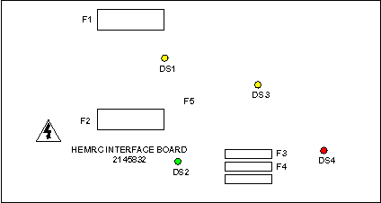

Operating Documentation
Direction 5114045-800, Rev# 10
LightSpeed 4.X Service Information (Advanced)
Operating Documentation |
The HEMRC (High Efficiency Motor Rotor Control) Interface Board provides a transition point for terminating existing gantry harness connections at J3 and J9. The board also provides the input means for the system to monitor the HVDC Bus and AC distribution.
Illustration 1: 2145832 HEMRC Interface Board

| Potential for Electrical Shock | |
| There are no test points on this board. All active circuitry is high impedance and tied to hazardous voltages. It must not be probed. | |
| The Chopper Control circuit is referenced to the DC- rail at all times. This is a potentially lethal voltage source. DO NOT connect to ground. |
| DS1: (YEL) | Indicates the HVDC- to HEMRC AC Drive. |
| DS2: (GRN) | Indicates 120 VAC is applied to the board. |
| DS3: (YEL) | Indicates the AC Drive DC+ and DC- are energized. |
| DS4: (RED) | Indicates a fault was detected in the Chopper Control. |
| F1: (20A, 700 VDC) | HVDC- to HEMRC AC Drive. |
| F2: (20A, 700 VDC) | HVDC+ to HEMRC AC Drive. |
| F3: (3A, 250 VAC) | Not Used. |
| F4: (8A, 250 VAC slo-blo) | 120 VAC to Filament power supply. |
| F5: (8A, 250 VAC slo-blo) | 120 VAC to HEMRC AC Drive Isolation Transformer. |